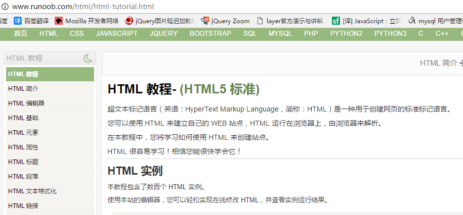

Ajax - 前后的交互技术
服务器的概念
前言：通俗的讲，能够提供某种服务的机器（计算机）称为服务器

服务器软件
使计算机具备提供某种服务能力的应用软件，称为服务器软件， 通过安装相应的服务软件，然后进行配置后就可以使计算具备了提供某种服务的能力。
常见的服务器软件： Apache服务器、Nginx 服务器、IIS服务器、Tomcat服务器、 Node服务器等；
web服务器
即(web服务器)网站服务器，主要提供文档(文本、图片、视频、音频)浏览服务，一般安装Apache、Nginx服务器软件。
服务器可以结合某一编程语言处理业务逻辑，由此进行的开发，通常称之为服务端开发。
常见后台开发的编程语言有： php、java、.net、Python、Ruby、Perl。
客户端
具有向服务器索取服务能力的终端，叫做客户端。
- 客户端：电脑、平板、手机安装了客户端软件，就可以称为客户端
- 客户端：安装客户端软件，索取服务的计算机
- 服务器：安装服务器软件，提供服务的计算机
客户端软件
{:width="200px"}
对于前端工程师而言，主要接触到的客户端软件就是浏览器。
以浏览器为宿主环境，结合 HTML、CSS、Javascript等技术，而进行的一系列开发，通常称之为前端开发。
服务器与客户端的关系

问题：我们写的html页面存放在哪里？
在浏览器中展示的所有的资源， 都是存放在服务器中的， 当客户端向服务器发送请求后，服务器会将资源返回给浏览器进行渲染；
动态网页与静态网页
- 静态网页：使用浏览器端语言进行编程，网站由静态代码（HTML.CSS,JS）组成。用户请求服务器上已经存在的页面，不需要进行业务逻辑的处理。 
- 动态网站 ：网页通过服务器的程序动态生成。用户可以和服务器进行交互（可以根据用户输入的不同信息，返回不同的运行结果），可以处理复杂的业务逻辑。
总结
动态网站的 `动`指的是网站`数据的动` 而不是 `视觉上的动`;
网络基础
//思考：我的电脑如何去 访问京东淘宝网页的？
ip地址
所谓IP地址就是给每个连接在互联网上的主机分配的一个32位地址。(就像每个人的身份证号码一样)
通过ip就可以找到具体的某一台计算机。
例 192.168.1.110
弊端：没有规律，不方便记忆和推广
查看本机IP地址 ping、ipconfig
ping 192.168.1.110 //查看和某个同学的电脑是否连通
两种特殊的IP地址：
127.0.0.1作为本地测试的IP地址。本机测试时，客户端与服务器都安装在本地计算机上，数据无需任何网络传输。
192.168开头为局域网的地址。
域名
由于IP地址基于数字，不方便记忆，于是便用域名来代替IP地址，域名是一个IP地址的“好记的名字”
查看域名对应的IP地址 ping
ping jd.com //可以获取到京东的ip
特殊的域名
localhost，意思为本地主机。这是一个保留域名，主要用于本地测试，对应IP地址为127.0.0.1。
DNS服务器
DNS（Domain Name System）因特网上作为域名和IP地址相互映射的一个分布式数据库， 能够使用户更方便的访问互联网，而不用去记住能够被机器直接读取的IP数串。
简单的说就是用于记录IP地址和域名之间的对应关系。
查找优先级 本机hosts文件、DNS服务器
ipconfig /flushdns 刷新DNS
问题： 在浏览器输入www.jd.com 到 浏览器返回html页面的执行过程是什么样的？
端口
端口号是计算机与外界通讯交流的出入口，每个端口对应不同的服务。
现实生活中，银行不同的窗口办理不同的业务。
查看端口占用情况 netstat -an
常见端口号 80：Web服务、3306：数据库、21：FTP
本地hosts
Hosts是一个没有扩展名的系统文件，可以用记事本等工具打开，其作用就是将一些常用的网址域名与其对应的IP地址建立一个关联“数据库”，当用户在浏览器中输入一个需要登录的网址时，系统会首先自动从Hosts文件中寻找对应的IP地址，一旦找到，系统会立即打开对应网页，如果没有找到，则系统会再将网址提交DNS域名解析服务器进行IP地址的解析。
//hosts文件的地址：C:\Windows\System32\drivers\etc
//在浏览器中输入taobao.com的执行过程。

//hosts文件内容
127.0.0.1 localhost
127.0.0.1 localhost
127.0.0.1 study.com
127.0.0.1 www.study.com
谈资
搭建HTTP服务器
phpStudy介绍
phpStudy是一个PHP调试环境的程序集成包。 该程序包集成最新的Apache+PHP+MySQL,安装非常的简单
phpStudy的安装
安装phpStudy，解压双击安装(非中文路径)，其它默认安装。
推荐就安装在默认的目录下，一定不能有中文，否则肯定启动不起来。
;
phpStudy的错误解决
如果phpStudy启动发生错误，参数下列几点。
- 一是防火墙拦截，
- 二是 80端口已经被别的程序占用，如IIS，迅雷等；
三是没有安装VC9运行库,php和apache都是VC9编译。
解决以上三个问题，99%能一次性安装成功
为了减少出错安装路径不得有汉字，如有防火墙开启，会提示是否信任httpd、mysqld运行，请选择全部允许。
关闭IIS服务器
如果发现服务器启动不成功，很大原因是端口被占用了，因为windows默认会有一个iis服务器，只需要把iis服务器给禁用了即可
//控制面板-->程序-->程序与功能-->启用或关闭windows功能

提示缺少vc9 库文件
在提供的资料库中找到phpStudy运行库， 根据自己电脑操作系统的位数安装对应的vc9运行库即可。
关闭防火墙
如果希望系统自己的服务器能够被别人访问。需要关闭防火墙。
//控制面板--->系统和安全--->Windows 防火墙--->启动或者关闭windows防火墙
PHP基础
PHP简介
- 开源（open source）软件，跨平台，常用操作系统稳定执行。Windows / Linux。做WEB开发的经典组合 WAMP,LAMP基本都是开源软件。
- 入门简单,用户只需要关注应用，开发成本低。
- 支持的大多数主流数据库。MySQL，oracle,Redis等
文件以.php后缀结尾，所有程序包含在
<?php 这里是代码 ?>避免使用中文目录和中文文件名php页面无法直接打开需要运行在服务器环境当中
注意：学习php的目的是为了更好的学习前端技能，因为需要了解一些后台的知识，千万不要本末倒置，我们的课程重心在前端。
php初体验
webstorm对于php的支持并不友好，没有高亮显示，但是也支持代码提示，功能比较微弱，如果需要专业的提示和高亮，建议使用vsCode。
<?php
//echo 相当于document.write
echo "hello world";
?>
输入中文乱码问题：如果使用echo输出中文，会乱码。
在php的语法中，末尾必须加分号，不然就报错了（最后一行可以不加分号）
<?php
//content-Type:text/html;返回内容是一个HTML文档，这样设置后，就能识别HTML标签了。
//charset=utf-8 设置编码集
header("content-Type:text/html;charset=utf-8");
echo "hello world";
echo "<br/>";
echo "大家好，我是春哥";
?>
//思考：浏览器访问php文件时，过程是怎么样的？
变量
php是一门弱类型语法，变量的类型可以随意改变。 变量其实就是存储数据的容器
变量的命名规则
//1. 不需要关键字进行声明，变量在第一次赋值的时候被创建。
//2. 必须以$符号开始
//3. $后面的命名规则与js的变量命名规则一致。
$name = "春哥";
echo $name;
数据类型
简单数据类型
字符串
$str = "春哥";
echo $str;
整数
$num = 100;
echo $num;
浮点型
$float = 11.11;
echo $float;
布尔类型
$flag = true;
//当布尔类型值为true时，输出1
echo $flag;
$flag = false;
//当布尔类型为false时，输出空字符串
echo $flag;
字符串连接符
//1. 在php中，+号只有算数的功能，并不能拼串
//2. 在php中，拼串使用.
$name = "春哥";
echo "大家好，我是" . $name . "，今年18岁";
php中的单引号与双引号
//1. 字符串的定义可以使用单引号，也可以使用双引号
$name = "春哥";
$desc = '很帅';
//2. 双引号可以解析变量
//3. 单引号的性能会高于双引号（了解）
$name = "春哥";//春哥
echo $name;
$desc = '很帅';
echo $desc;//很帅
$str = '$name 很帅';//$name 很帅
echo $str;
$str = "$name 很帅";//春哥 很帅
echo $str;
数组
在php中，数组分为两种，索引数组和关联数组
计算数组长度的方法： count(数组名);
索引数组（类似与JS中的数组）
$arr = array("张飞","赵云","马超");
echo $arr;//echo只能打印基本数据类型
echo $arr[0];//张飞
关联数组（类似与JS中的对象）
//属性名必须用引号引起来
$arr = array("name"=>"zhangsan", "age"=>18);
echo $arr["name"];
输出语句
//1. echo 输出简单数据类型
//2. print_r 输出数据结构，一般用于输出复杂类型。
print_r($arr);//print_r是一个函数，不要忘记小括号
//3. var_dump 输出完整的数据结构，包括类型，一般用于精准调试
var_dump($arr);
语句
判断语句
基本上来说，所有语言的if..else语法都是一样
$age = 17;
if ($age >= 18) {
echo "终于可以看电影了,嘿嘿嘿";
} else {
echo "哎，还是回家学习吧";
}
循环语句
遍历索引数组
$arr = array("张三", "李四", "王五", "赵六", "田七", "王八");
//获取数组的长度： count($arr)
for($i = 0; $i < count($arr); $i++) {
echo $arr[$i];
echo "<br>";
}
遍历关联数组
//遍历关联数组
$arr = array(
"name"=>"zs",
"age"=>18,
"sex"=>20
);
foreach($arr as $key => $value) {
echo $key . "=" . $value . "<br>";
}
表单提交

表单（form）：表单用于收集用户输入信息，并将数据提交给服务器。是一种常见的与服务端数据交互的一种方式
//1. action：指定表单的提交地址
//2. method:指定表单的提交方式，get/post，默认get
//3. input的数据想要提交到后台，必须指定name属性，后台通过name属性获取值
//4. 想要提交表单，不能使用input:button 必须使用input:submit
php获取表单数据
//$_GET是PHP系统提供的一个超全局变量，是一个数组，里面存放了表单通过get方式提交的数据。
//$_POST是PHP系统提供的一个超全局变量，是一个数组，里面存放了表单通过post方式提交的数据。
get与post的区别
//1. get方式
//1.1 数据会拼接在url地址的后面?username=hcc&password=123456
//1.2 地址栏有长度限制，因此get方式提交数据大小不会超过4k
//2. post方式
//2.1 数据不会在url中显示，相比get方式，post更安全
//2.2 提交的数据没有大小限制
//3. request方式
//以上两种方式的集合
//根据HTTP规范，GET用于信息获取，POST表示可能修改变服务器上的资源的请求
http协议
协议是指计算机通信网络中两台计算机之间进行通信所必须共同遵守的规定或规则 HTTP协议，即超文本传输协议(Hypertext transfer protocol)。是一种详细规定了浏览器和服务器之间互相通信的规则，HTTP协议分为请求 和响应 两个部分组成。
服务状态码
//200 响应的状态
//200表示成功
//304表示读缓存
//404表示找不到资源
//500表示服务端错误
请求与请求报文
get请求的请求报文详解

POST请求的请求报文

GET请求与POST请求的对比
- GET请求没有请求体，因为GET请求的参数拼接到地址栏中了
- POST请求有请求体，就是传递的参数
- POST请求需要指定content-type属性。
响应与响应报文

通常来说，我们不会用抓包工具来查看请求和响应，太麻烦了，可以直接使用谷歌浏览器来查看请求报文和响应报文。
谷歌浏览器会对报文进行一定的格式化，看起来虽然不是原生的报文，但是使用起来更加的方便简洁。
注意：name=zs&sex=nan 查询字符串
AJAX
即 Asynchronous [e'sɪŋkrənəs] Javascript And XML， AJAX 不是一门的新的语言，而是对现有技术的综合利用。 本质是在HTTP协议的基础上以异步的方式与服务器进行通信。
同步与异步
同步和异步概念：
同步: 指的就是事情要一件一件做。等做完前一件才能做后一件任务
异步: 不受当前任务的影响，两件事情同时进行，做一件事情时，不影响另一件事情的进行。
编程中：异步程序代码执行时不会阻塞其它程序代码执行,从而提升整体执行效率。
ajax技术的应用：
- 验证你的用户名是否已经存在（一边输入，一边获取你的信息，和后台比对）。
- 百度搜索提示，及相关内容展示（一边输入，一边找出了你可能要的内容）。
XMLHttpRequest可以以异步方式的处理程序。
XMLHttpRequest
浏览器内建对象，用于与服务器通信(交换数据) ， 由此我们便可实现对网页的部分更新，而不是刷新整个页面。这个请求是异步，即在往服务器发送请求时，并不会阻碍程序的运行，浏览器会继续渲染后续的结构。
发送get请求
XMLHttpRequest以异步的方式发送HTTP请求，因此在发送请求时，一样需要遵循HTTP协议。
//使用XMLHttpRequest发送get请求的步骤
//1. 创建一个XMLHttpRequest对象
var xhr = new XMLHttpRequest（）;//构造函数没有参数的情况,括号可以省略
//2. 设置请求行
//第一个参数:请求方式 get/post
//第二个参数:请求的地址 需要在url后面拼上参数列表
//第三个参数：默认为true，是否异步处理数据
xhr.open("get", "08.php?name=hucc",true);
//3. 设置请求头
//浏览器会给我们默认添加基本的请求头,get请求时无需设置
xhr.setRequestHeader('content-type','text/html');
//4. 设置请求体
//get请求的请求体为空,因为参数列表拼接到url后面了
xhr.send(null);
- get请求,设置请求行时,需要把参数列表拼接到url后面
- get请求不用设置请求头
- get请求的请求体为null
发送post请求
var xhr = new XMLHttpRequest;
//1. 设置请求行 post请求的参数列表在请求体中
xhr.open("post", "09.php");
//2. 设置请求头, post请求必须设置content-type,不然后端无法获取到数据
xhr.setRequestHeader("content-type", "application/x-www-form-urlencoded");
//3. 设置请求体
xhr.send("name=hucc&age=18");
- post请求,设置请求行时,参数列表不能拼接到url后面
- post必须设置请求头中的content-type为application/x-www-form-urlencoded
- post请求需要将参数列表设置到请求体中.
获取响应
HTTP响应分为3个部分，状态行、响应头、响应体。
//给xhr注册一个onload事件，当xhr的状态发生状态发生改变时，会触发这个事件。
xhr.onload = function () {
//1. 获取状态行
//"状态行:"
xhr.status;
//2. 获取响应头
//所有的相应头
xhr.getAllResponseHeaders();
//指定相应头
xhr.getResponseHeader("content-type"));
//3. 获取响应体
xhr.responseText;
readyState
readyState:记录了XMLHttpRequest对象的当前状态
//0：请求未初始化。
//1：请求已经建立，但是还没有开始发送。
//2：请求已发送，正在处理中
//3：请求在处理中；通常响应中已有部分数据可用了，但是服务器还没有完成响应的生成。
//4：响应已完成；您可以获取并使用服务器的响应了。(我们只需要关注状态4即可)
数据交互
浏览器端只是负责用户的交互和数据的收集以及展示，真正的数据都是存储在服务器端的。我们现在通过ajax的确可以返回一些简单的数据（一个字符串），但是在实际开发过程中，肯定会会设计到大量的复杂类型的数据传输，比如数组、对象等，但是每个编程语言的语法都不一样。因此我们会采用通过的数据交换格式（XML、JSON）来进行数据的交互。
XML
什么是XML
- XML 指可扩展标记语言（EXtensible Markup Language）
- XML 是一种标记语言，很类似 HTML
- XML 的设计宗旨是传输数据，而非显示数据
- XML 标签没有被预定义。您需要自行定义标签。
语法规范
- 第一行必须是版本信息
- 必须有一个根元素（有且仅有一个）
- 标签不可有空格、不可以数字或.开头、大小写敏感
- 不可交叉嵌套，都是双标签，如果是单标签，必须闭合
- 属性双引号（浏览器自动修正成双引号了）
- 特殊符号要使用转义字符
- 注释和HTML一样
<students>
<student>
<name>张三</name>
<age>18</age>
<gender>男</gender>
<desc>路人甲</desc>
</student>
<student>
<name>李四</name>
<age>20</age>
<gender>男</gender>
<desc>路人乙</desc>
</student>
</students>
php获取xml文件的内容
//注意，如果需要返回xml数据，需要把content-type改成text/xml,不然浏览器以text/html进行解析。
header('content-type:text/xml;charset=utf-8');
//用于获取文件的内容
//参数：文件的路径
$result = file_get_contents("data.xml");
echo $result;
html解析xml
//获取服务端返回的xml数据，需要使用xhr.responseXML，这是一个document对象，可以使用DOM中的方法查找元素。
var data = xhr.responseXML;
//获取所有的学生
var students = data.querySelectorAll("student");
缺点：虽然可以描述和传输复杂数据，但是其解析过于复杂并且体积较大，所以实现开发已经很少使用了。
JSON数据
JSON(JavaScript Object Notation, JS 对象标记) 是一种轻量级的数据交换格式。它基于 ECMAScript 规范的一个子集，采用完全独立于编程语言的文本格式来存储和表示数据。
- 数据在键值对中
- 数据由逗号分隔(最后一个健/值对不能带逗号)
- 花括号保存对象，方括号保存数组
- 键使用双引号
var json1 = '{"a": "Hello", "b": "World"}';
var json2 = '[{"a": "Hello", "b": "World"},{"a": "Hello", "b": "World"}]';
//这是一个 JSON 字符串，本质是一个字符串
JSON数据在不同语言进行传输时，类型为字符串，不同的语言各自也都对应有解析方法，需要解析完成后才能读取
JS处理json
- JS对象 ==> JSON字符串 JSON.stringify(obj)
//obj是一个js对象
var obj = {a: 'Hello', b: 'World'}
//result就变成了一个json字符串了
var result = JSON.stringify(obj);
// '{"a": "Hello", "b": "World"}'
- JSON字符串 ==> JS对象 JSON.parse(obj)
//json是一个json字符串
var json = '{"a": "Hello", "b": "World"}';
//obj就变成了一个js对象
var obj = JSON.parse(json);
// {a: 'Hello', b: 'World'}
php处理json
- php关联数组==> json
// php的关联数组
$obj = array(
"a"=>"hello",
"b"=>"world",
"name"=>"胡聪聪"
);
//json字符串
$json = json_encode($obj);
echo $json;
- json===>php对象
$json = '{"a": "Hello", "b": "World"}';
//json字符串
//第一个参数：json字符串
//第二个参数：
//false，将json转换成对象(默认)
//true：将对象转换成数组(推荐)
$obj = json_decode($json,true);
echo $obj['a'];
//通过json文件获取到的内容就是一个json字符串。
$data = file_get_contents("data.json");
//将json转换成数组
$result = json_decode($data, true);
print_r($result);
使用json进行数据传输
思考：
- js有一个对象，如何发送到php后台
- php中有一个对象，如何发送到前台。
【案例：获取表格数据.html】
兼容性处理
var xhr = null;
if(XMLHttpRequest){
//现代浏览器
xhr = new XMLHttpRequest();
}else{
//IE5.5支持
xmlHttp=new ActiveXObject("Microsoft.XMLHTTP");
}
前后端分离
我们使用php动态渲染页面时，有很多比较麻烦的地方。
- 在前端写好页面以后，需要后台进行修改，意味这后端程序员也需要懂前端的知识，其实渲染的工作应该交给前端来做。
- 前端没有写好页面的话，后端无法开始工作，需要等待前端的页面完成之后才能开始工作，拖延项目 的进度。
- 在客户端设备多元化的情况下，后台渲染的页面无法满足所有用户的需求
- 前后端代码混合在一个文件中，项目修改和维护成本高
jQuery中的ajax方法
jQuery为我们提供了更强大的Ajax封装
$.ajax
参数列表
| 参数名称 | 描述 | 取值 | 示例 |
|---|---|---|---|
| url | 接口地址 | url:"02.php" | |
| type | 请求方式 | get/post | type:"get" |
| timeout | 超时时间 | 单位毫秒 | timeout:5000 |
| dataType | 服务器返回的格式 | json/xml/text(默认) | dataType:"json" |
| data | 发送的请求数据 | 对象 | data:{name:"zs", age:18} |
| beforeSend | 调用前的回调函数 | function(){} | beforeSend:function(){ alert(1) } |
| success | 成功的回调函数 | function (data) {} | success:function (data) {} |
| error | 失败的回调函数 | function (error) {} | error:function(data) {} |
| complete | 完成后的回调函数 | function () {} | complete:function () {} |
使用示例：
$.ajax({
type:"get",//请求方式，默认值get
url:"02.php",//请求地址
data:{name:"zs", age:18},//请求数据,是一个对象或者拼接字符串
dataType:"json",//希望接受的数据类型，默认text；当设置为json时，$.ajax将返回的值自动解析（JSON.parse()）;
timeout:5000,//设置超时时间
beforeSend:function () {
//alert("发送前调用");
},
success:function (data) {
//alert("成功时调用");
console.log(data);
//data服务器返回的数据
},
error:function (error) {
//alert("失败时调用");
console.log(error);
},
complete:function () {
//alert("请求完成时调用");
//不论请求成功与否，请求结束后都会执行
//用于执行一些收尾的工作，复位/垃圾回收
}
});
【案例：登录案例.html】
其他api(了解)
//$.post(url, callback, [dataType]);只发送post请求
//$.get(url, callback, [dataType]);
//$.getJSON(url, callback);
//$.getScript(url,callback);//载入服务器端的js文件
//$("div").load(url);//载入一个服务器端的html页面。
接口化开发
请求地址即所谓的接口，通常我们所说的接口化开发，其实是指一个接口对应一个功能， 并且严格约束了请求参数 和响应结果 的格式，这样前后端在开发过程中，可以减少不必要的讨论， 从而并行开发，可以极大的提升开发效率，另外一个好处，当网站进行改版后，服务端接口进行调整时，并不影响到前端的功能。
接口文档
数据接口文档案例网站：聚合数据网站https://www.juhe.cn/
//前端有哪些地方依赖与后台
$.ajax({
//以下都是后台决定的
url:"",
type:"",
data:"",
dataType:""
});
表单序列化
jquery提供了一个serialize()方法序列化表单，说白就是将表单中带有name属性的所有参数拼成一个格式为name=value&name1=value1这样的字符串。方便我们获取表单的数据。
//serialize将表单参数序列化成一个字符串。必须指定name属性
//name=hucc&pass=123456&repass=123456&mobile=18511249258&code=1234
$('form').serialize();
jquery的ajax方法，data参数能够直接识别表单序列化的数据data:$('form').serialize()
$.post({
url:"register.php",
data:$('form').serialize(),
dataType:'json',
success:function (info) {
console.log(info);
}
});
注意：DOM中自带重置表单方法reset();
需求文档
//注册功能
//总需求：点击注册按钮，向服务端发送请求
//需求1:表单校验
//1.1 用户名不能为空，否则提示"请输入用户名"
//1.2 密码不能为空，否则提示"请输入密码"
//1.3 确认密码必须与密码一直，否则提示"确认密码与密码不一致"
//1.4 手机号码不能为空，否则提示"请输入手机号码";
//1.5 手机号码格式必须正确，否则提示"手机号格式错误"
//1.6 短信验证码必须是4位的数字，否则提示"验证码格式错误"
//需求2：点击注册按钮时，按钮显示为"注册中...",并且不能重复提交请求
//需求3：根据不同响应结果，处理响应
//3.1显示注册结果
模板引擎
是为了使用户界面与业务数据（内容）分离而产生的，它可以生成特定格式的文档，用于网站的模板引擎就会生成一个标准的HTML文档。
为什么要使用模板引擎
我们通过ajax获取到数据后，需要把数据渲染到页面，在学习模板引擎前，我们的做法是大量的拼接字符串，对于结构简单的页面，这么做还行，但是如果页面结构很复杂，使用拼串的话代码可阅读性非常的差，而且非常容易出错，后期代码维护也是相当的麻烦。
【演示：使用拼串进行渲染的缺点.html】
作用：代替前面渲染数据是拼接字符串操作
实际工作渲染数据使用的模板引擎
常见的模板引擎
BaiduTemplate：http://wangxiao.github.io/BaiduTemplate/
VelocityTemplate：https://github.com/shepherdwind/velocity.js/
ArtTemplate：https://github.com/aui/artTemplate
artTemplate是使用最广泛，效率最高的模板引擎，需要大家掌握由腾讯公司开源提供。
artTemplate的使用
artTemplate入门
1.引入模板引擎的js文件
<script src="template-web.js"></script>
2.准备模板
<!--
指定了type为text/template后，这一段script标签并不会解析，也不会显示 //{{ }} 插值表达式
-->
<script type="text/template" id="tmp">
<p>姓名：{{ username }}</p>
<p>年龄：{{ age }}</p>
<p>技能：{{ skill }}</p>
<p>描述：{{desc }}</p>
</script>
3.准备数据
//3. 准备数据,数据是后台获取的，可以随时变化
var json = {
userName:"隔壁老王",
age:18,
skill:"查水表",
desc:"年轻气壮"
}
4.将模板与数据进行绑定
//第一个参数：模板的id
//第二个参数：数据
//返回值：根据模板生成的字符串。
var html = template("Tmp", json);
console.log(html);
5.将数据显示到页面
var div = document.querySelector("div");
div.innerHTML = html;
注意：
传递给模板引擎的数据必须是对象，解决方案见下方
在模板中直接使用对象的属性名
//数据包装成对象
//
var num = 10；
var obj ={
num ：num
}
var res = [{},{},{},{}];
var obj ={
list : res
}
//模板
/*{{each list v i}}
<li> v.name <li/>
{{/each}}*/
artTemplate语法
//模板基本语法 插值表达式
{{ }}
if语法
{{if gender='男'}}
<div class="man">
{{else}}
<div class="woman">
{{/if}}
each语法
<!--
1. {{each data}} 可以通过$value 和 $index获取值和下标
2. {{each data v i}} 自己指定值为v，下标为i
-->
{{each data v i}}
<li>
<a href="{{v.url}}">
<img src="{{v.src}}" alt="">
<p>{{v.content}}</p>
</a>
</li>
{{/each}}
//如果返回的数据是个数组，必须使用对象进行包裹，因为在{{}}中只写书写对象的属性。
var html = template("navTmp", {data:info});
XMLHttpRequest 2.0
XMLHttpRequest是一个javascript内置对象，使得Javascript可以进行异步的HTTP通信。2008年2月，就提出了XMLHttpRequest Level 2 草案。
老版本的XMLHttpRequest的缺点：
//1. 仅支持传输文本数据，无法传说二进制文件，比如图片视频等。
//2. 传输数据时，没有进度信息，只能提示完成与否。
//3. 受到了"同源策略"的限制
新版本的功能：
//1. 可以设置timeout 超时时间
//2. 可以使用formData对象管理表单数据
//3. 可以获取数据传输的进度信息
注意：我们现在使用new XMLHttpRequest创建的对象就是2.0对象了，我们之前学的是1.0的语法， 现在学习一些2.0的新特性即可。
timeout设置超时
xhr.timeout = 3000;//设置超时时间
xhr.ontimeout = function(){
alert("请求超时");
}
formData管理表单数据
formData对象类似于jquery的serialize方法，用于管理表单数据和文件
//使用特点：
//1. 实例化一个formData对象， new formData(form); form就是表单元素
//4. formData对象可以直接作为 xhr.send(formData)的参数。注意此时数据是以二进制的形式进行传输。
//5. formData有一个append方法，可以添加参数。formData.append("id", "1111");
//6. 这种方式只能以post形式传递，不需要设置请求头，浏览器会自动为我们设置一个合适的请求头。
注意：使用formData，请求方式必须使用post，不需要手动设置请求头
代码示例：
//1. 使用formData必须发送post请求
xhr.open("post", "02-formData.php");
//2. 获取表单元素
var form = document.querySelector("#myForm");
//3. 创建form对象，可以直接作为send的参数。
var formData = new FormData(form);
//4. formData可以使用append方法添加参数
formData.append("id", "1111");
//5. 发送，不需要指定请求头，浏览器会自动选择合适的请求头
xhr.send(formData);
文件上传
以前，文件上传需要借助表单进行上传，但是表单上传是同步的，也就是说文件上传时，页面需要提交和刷新，用户体验不友好，xhr2.0中的formData对象支持文件的异步上传。
var formData = new FormData();
//获取上传的文件，传递到后端
var file=document.getElementById("file").files[0];
formData.append("file", file);
xhr.send(formData);
//阻止提交按钮的默认行为
btn.onclick = function(){
e.preventDefault();//阻止浏览器的默认行为
}
显示文件进度信息
xhr2.0还支持获取上传文件的进度信息，因此我们可以根据进度信息可以实时的显示文件的上传进度。
1. 需要注册 xhr.upload.onprogress = function(e){} 事件，用于监听文件上传的进度.
注意：需要在send之前注册。
2. 上传的进度信息会存储事件对象e中
3. e.loaded表示已上传的大小 e.total表示整个文件的大小
公式：文件上传进度=已经上传大小/文件总大小
代码参考：
xhr.upload.onprogress = function (e) {
inner.style.width = (e.loaded/e.total*100).toFixed(2)+"%";
span.innerHTML = (e.loaded/e.total*100).toFixed(2)+"%";
}
xhr.send(formData);
如果上传文件超过8M，php会报错，需要进行设置，允许php上传大文件。


同源与跨域
同源
不同源 则跨域
同源策略的基本概念
1995年，同源政策由 Netscape 公司引入浏览器。目前，所有浏览器都实行这个政策。 同源策略：最初，它的含义是指，A网页设置的 Cookie，B网页不能打开，除非这两个网页"同源"。现在浏览器的所谓"同源"指的是"三个相同":协议相同、域名相同、端口相同
协议相同 http/https
域名相同 www.baidu.com
端口相同 80/8080
举例来说，http://www.example.com/dir/page.html这个网址，协议是http://，域名是www.example.com，端口是80（默认端口可以省略）。它的同源情况如下。
//http://www.example.com/dir2/other.html：同源
//http://example.com/dir/other.html：不同源（域名不同）
//http://v2.www.example.com/dir/other.html：不同源（域名不同）
//http://www.example.com:81/dir/other.html：不同源（端口不同）
同源策略的目的
同源政策的目的，是为了保证用户信息的安全，防止恶意的网站窃取数据。
同源策略的限制范围
随着互联网的发展，“同源策略”越来越严格，目前，如果非同源，以下三种行为都将收到限制。
//1. Cookie、LocalStorage 无法读取。
//2. DOM 无法获得。
//3. AJAX 请求不能发送。
虽然这些限制是很有必要的，但是也给我们日常开发带来不好的影响。比如实际开发过程中，往往都会把服务器端架设到一台甚至是一个集群的服务器中，把客户端页面放到另外一个单独的服务器。那么这时候就会出现不同源的情况，如果我们知道两个网站都是安全的话，我们是希望两个不同源的网站之间可以相互请求数据的。这就需要使用到跨域 。
跨域
【演示跨域问题.html】
jsonp
JSONP(JSON with Padding)、可用于解决主流浏览器的跨域数据访问的问题。原理：服务端返回一个预先定义好的javascript函数的调用，并且将服务器的数据以该函数参数的形式传递过来，这个方法需要前后端配合。
script 标签是不受同源策略的限制的，它可以载入任意地方的 JavaScript 文件，而并不要求同源。类似的还有img和link标签
<!--不受同源策略的标签-->
<img src="http://www.api.com/1.jpg" alt="">
<link rel="stylesheet" href="http://www.api.com/1.css">
<script src="http://www.api.com/1.js"></script>
jsonp原理
- 实现本质
在跨域情况下XMLHTTPRequest对象会被浏览器限制，无法发送请求。
$.ajax设置datatype:json时，使用的是其它方法请求服务器。
在跨域情况下有些标签是不受同源策略限制，例如：img、link、script。
黑客发现以上标签中 src和href属性具有跨域请求资源的能力。
可以使用script标签的src属性请求跨域服务器
- 具体实现细节
用script标签的src属性向后台传递数据只能使用get方式传递数据
- 前端需要定义一个方法，然后把方法名传递给后台
- 后台获取传输过去的方法，在方法名后拼接()，同时在括号内填写需要的数据
前端收到返回的结果会立即调用，该方法取出了后台返回的数据（注：用script标签包裹的会立即调用）
实现过程
前端：
function say(){
}
<script src="....?callback=say"></script>
后台：
echo $_GET["?callback"].(".$info.")
注意：
- jsonp只能发生get请求
- jsonp需要后台配合
jsonp演化过程
jsonp原理大家知道即可，不用太过于去纠结这个原理，因此jquery已经帮我们封装好了，我们使用起来非常的方便。
jquery对于jsonp的封装
//使用起来相当的简单，跟普通的get请求没有任何的区别，只需要把dataType固定成jsonp即可。
$.ajax({
type:"get",
url:"http://www.api.com/testjs.php",
dataType:"jsonp",
data:{
uname:"hucc",
upass:"123456"
},
success:function (info) {
console.log(info);
}
});
【案例：查询天气.html】
百度天气实例：天气API无法提供超过5000次的天气服务免费支持
http://lbsyun.baidu.com/index.php?title=car/api/weather
//接口示例
url : "http://api.map.baidu.com/telematics/v3/weather?location=%E5%8C%97%E4%BA%AC&output=json&ak=E4805d16520de693a3fe707cdc962045",

极速数据天气实例
秘钥：zVo5SStav7IUiVON0kuCogecm87lonOj
图灵机器人：http://www.tuling123.com/
跨域资源共享(CORS)
cors的使用
新版本的XMLHttpRequest对象，可以向不同域名的服务器发出HTTP请求。这叫做"跨域资源共享"（Cross-origin resource sharing，简称CORS）。
跨域资源共享（CORS）的前提
- 浏览器支持这个功能
- 服务器必须允许这种跨域。
服务器允许跨域的代码：
//允许所有的域名访问这个接口
header("Access-Control-Allow-Origin:*");
//允许www.study.com这个域名访问这个接口
header("Access-Control-Allow-Origin:http://www.study.com");
CORS的具体流程（了解）
- 浏览器会根据同源策略 查看是否是跨域请求，如果同源，直接发送ajax请求。
- 如果非同源，说明是跨域请求，浏览器会自动发送一条请求（预检请求 ），并不会携带数据，服务器接受到请求之后，会返回请求头信息，浏览器查看返回的响应头信息中是否设置了
header('Access-Control-Allow-Origin:请求源域名或者*'); - 如果没有设置，说明服务器不允许使用cors跨域，那么浏览器不会发送真正的ajax请求。
- 如果返回的响应头中设置了
header('Access-Control-Allow-Origin:请求源域名或者*');,浏览器会跟请求头中的Origin: http://www.study.com进行对比，如果满足要求，则发送真正的ajax请求，否则不发送。 - 结论：跨域行为是浏览器行为，是浏览器阻止了ajax行为。服务器与服务器之间是不存在跨域的问题的
【案例：图灵机器人】